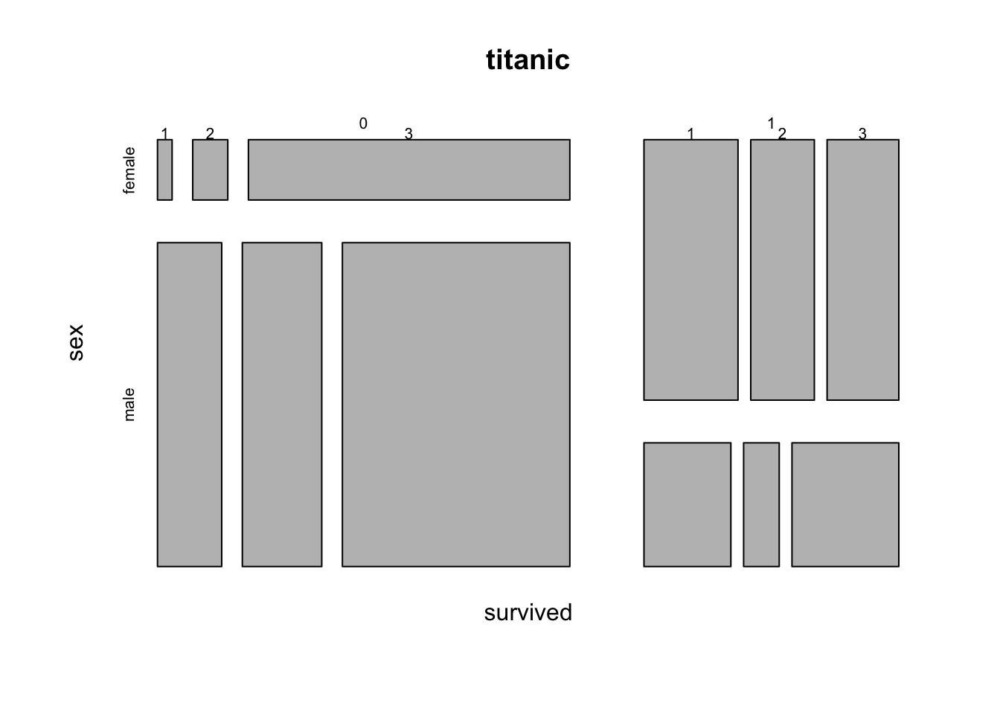
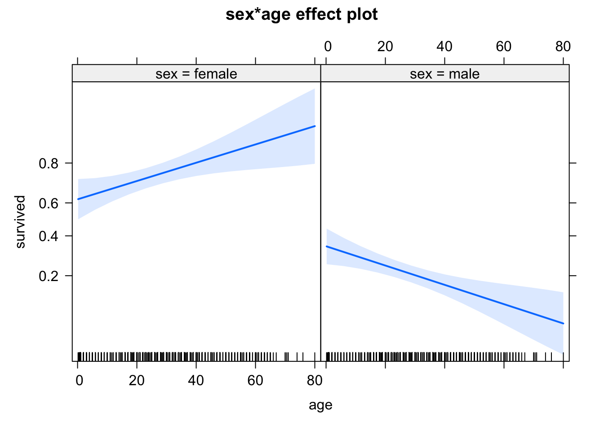
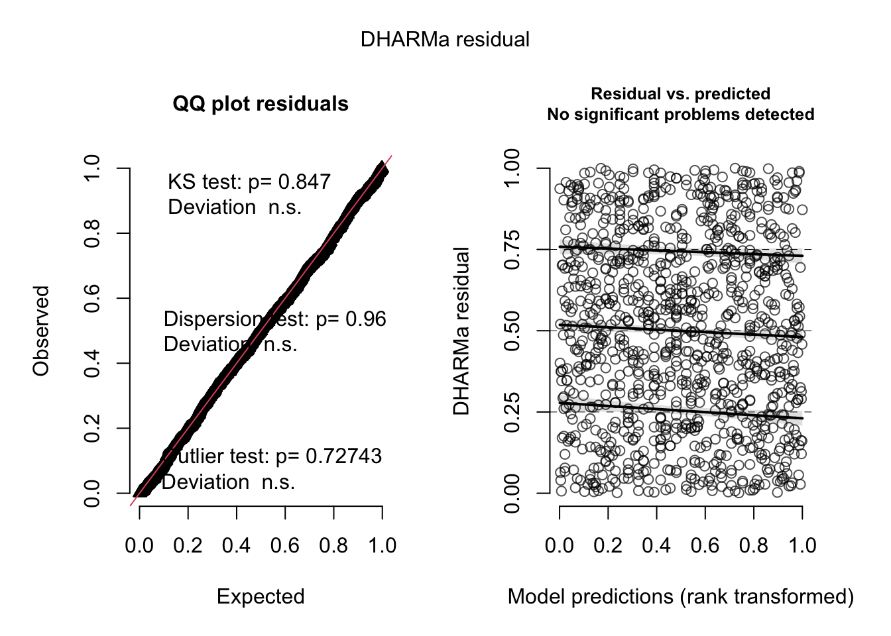
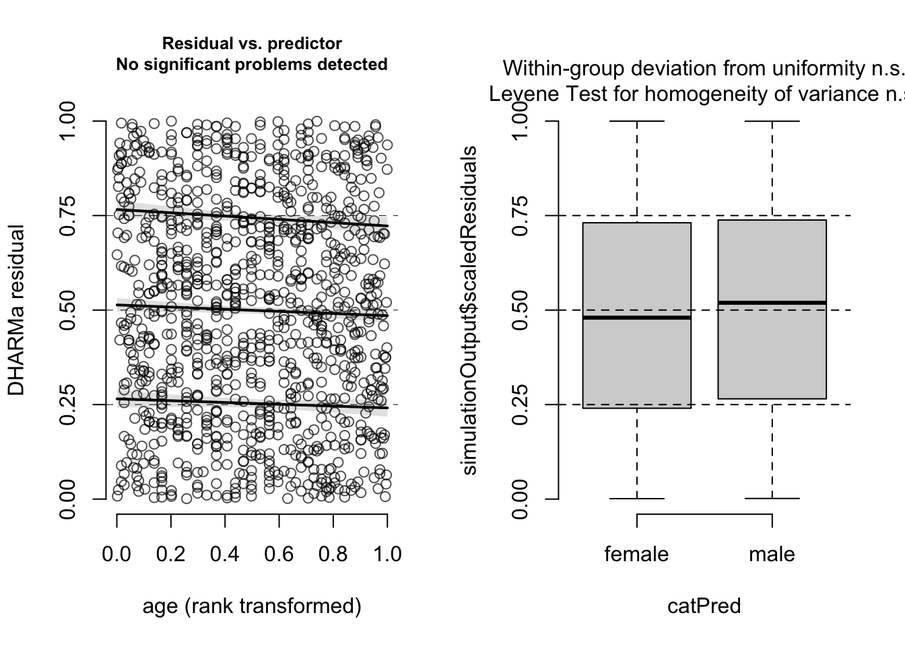
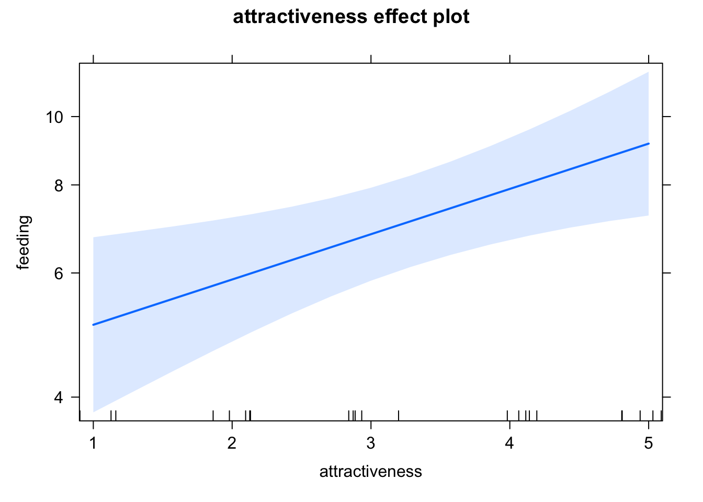
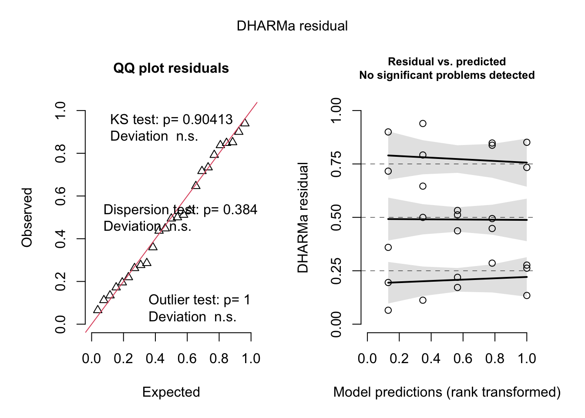
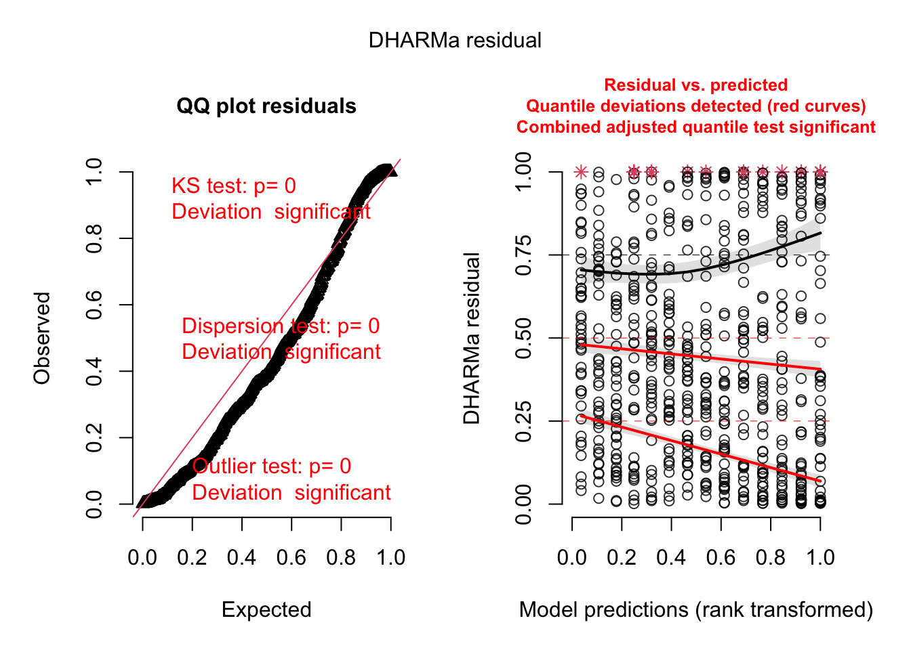
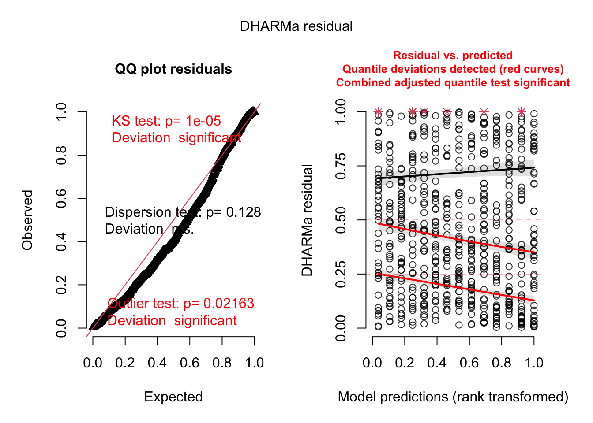
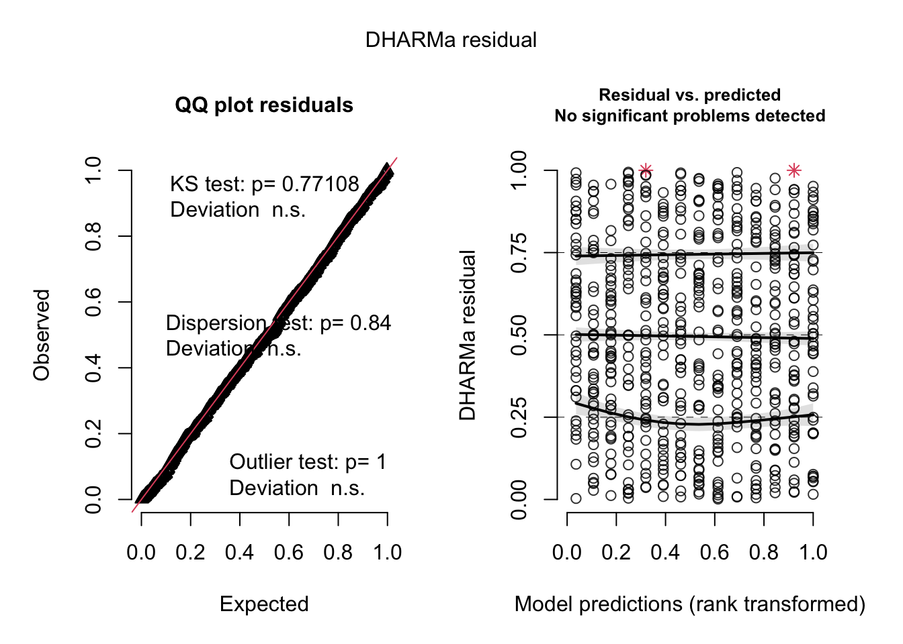
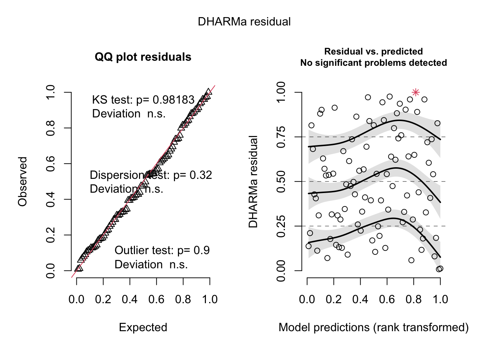

9 GLMs
10 GLMMs
10.1 Basics
Generalized linear models (GLMs) in R are fit with the glm() function. The main difference from lm() is that you can specify the ‘family’ parameter, which gives you the option to use different distributions than the normal distribution.
The family argument also includes the link function. The link function internally transforms a linear model on the predictors, so that its response corresponds to the range of the outcome distribution. If you don’t specify a link, the default link for each family is chosen. The most important are
- Log link for Poisson family.
- Logit link for Bernoulli / Binomial family.
Of course, there are many additional distributions that you could consider for your response. Here an overview of the most common choices:
Screenshot taken from Wikipedia: https://en.wikipedia.org/wiki/Generalized_linear_model#Link_function. Content licensed under the Creative Commons Attribution-ShareAlike License 3.0.
10.1.1 Binomial data - logistic regression
The standard model to fit binomial (0/1 or k/n) data is the logistic regression, which combines the binomial distribution with a logit link function. To get to know this model, let’s have a look at the titanic data set in EcoData:
library(EcoData)
str(titanic)'data.frame': 1309 obs. of 14 variables:
$ pclass : int 1 1 1 1 1 1 1 1 1 1 ...
$ survived : int 1 1 0 0 0 1 1 0 1 0 ...
$ name : chr "Allen, Miss. Elisabeth Walton" "Allison, Master. Hudson Trevor" "Allison, Miss. Helen Loraine" "Allison, Mr. Hudson Joshua Creighton" ...
$ sex : chr "female" "male" "female" "male" ...
$ age : num 29 0.917 2 30 25 ...
$ sibsp : int 0 1 1 1 1 0 1 0 2 0 ...
$ parch : int 0 2 2 2 2 0 0 0 0 0 ...
$ ticket : chr "24160" "113781" "113781" "113781" ...
$ fare : num 211 152 152 152 152 ...
$ cabin : chr "B5" "C22 C26" "C22 C26" "C22 C26" ...
$ embarked : chr "S" "S" "S" "S" ...
$ boat : chr "2" "11" "" "" ...
$ body : int NA NA NA 135 NA NA NA NA NA 22 ...
$ home.dest: chr "St Louis, MO" "Montreal, PQ / Chesterville, ON" "Montreal, PQ / Chesterville, ON" "Montreal, PQ / Chesterville, ON" ...mosaicplot( ~ survived + sex + pclass, data = titanic)
titanic$pclass = as.factor(titanic$pclass)We want to analyze how survival in the titanic accident dependend on other predictors. We could fit an lm, but the residual checks make it very evident that the data with a 0/1 response don’t fit to the assumption of an lm:
fit = lm(survived ~ sex * age, data = titanic)
summary(fit)
Call:
lm(formula = survived ~ sex * age, data = titanic)
Residuals:
Min 1Q Median 3Q Max
-0.8901 -0.2291 -0.1564 0.2612 0.9744
Coefficients:
Estimate Std. Error t value Pr(>|t|)
(Intercept) 0.637645 0.046165 13.812 < 2e-16 ***
sexmale -0.321308 0.059757 -5.377 9.35e-08 ***
age 0.004006 0.001435 2.792 0.00534 **
sexmale:age -0.007641 0.001823 -4.192 3.01e-05 ***
---
Signif. codes: 0 '***' 0.001 '**' 0.01 '*' 0.05 '.' 0.1 ' ' 1
Residual standard error: 0.4115 on 1042 degrees of freedom
(263 observations deleted due to missingness)
Multiple R-squared: 0.3017, Adjusted R-squared: 0.2997
F-statistic: 150 on 3 and 1042 DF, p-value: < 2.2e-16par(mfrow = c(2, 2))
plot(fit)
Thus, what we want to fit is a logistic regression, which assumes a 0/1 response + logit link. In principle, this is distribution is called Bernoulli, but in R both 0/1 and k/n are called “binomial”, as Bernoulli is the special case of binomial where n = 1.
m1 = glm(survived ~ sex*age, family = "binomial", data = titanic)
summary(m1)
Call:
glm(formula = survived ~ sex * age, family = "binomial", data = titanic)
Deviance Residuals:
Min 1Q Median 3Q Max
-2.0247 -0.7158 -0.5776 0.7707 2.2960
Coefficients:
Estimate Std. Error z value Pr(>|z|)
(Intercept) 0.493381 0.254188 1.941 0.052257 .
sexmale -1.154139 0.339337 -3.401 0.000671 ***
age 0.022516 0.008535 2.638 0.008342 **
sexmale:age -0.046276 0.011216 -4.126 3.69e-05 ***
---
Signif. codes: 0 '***' 0.001 '**' 0.01 '*' 0.05 '.' 0.1 ' ' 1
(Dispersion parameter for binomial family taken to be 1)
Null deviance: 1414.6 on 1045 degrees of freedom
Residual deviance: 1083.4 on 1042 degrees of freedom
(263 observations deleted due to missingness)
AIC: 1091.4
Number of Fisher Scoring iterations: 4Can you interpret the output? What do the regression coefficients mean?
In principle, interpretation as before, but if you want transform the coefficients in predictions, you have to apply the link function on the linear predictor. Binomial uses per default the logit link, to calculate the response use:
plogis(0.493381 + 0.022516 * 20) # Women, age 20.[1] 0.7198466plogis(0.493381 -1.154139 + 20*(0.022516-0.046276)) # Men, age 20[1] 0.2430632Alternatively, you can also use the predict function to transform predictions to the response scale
newDat = data.frame(sex = as.factor(c("female", "male")), age = c(20,20))
predict(m1, newdata = newDat) # Linear predictor. 1 2
0.9436919 -1.1359580 predict(m1, newdata = newDat, type = "response") # Response scale. 1 2
0.7198448 0.2430633 A third alternative is to look at the effect plots, which scale the y axis according to the link scale
library(effects)
plot(allEffects(m1))
Note:
- Treatment coding for factors works as before.
- If you have k/n data, you can either specify the response as cbind(k, n-k), or you can fit the glm with k ~ x, weights = n
- For interactions, as in our age effect for male / female, effect sizes can in general not be directly be compared, because they are calculated at a different intercept, and through the nonlinear link, this leads to a different effect on the response. One option to solve this are the so-called odds ratios. Or just look at the response scale, e.g. via the effect plots, and interpret there! In our example, however, effect directions changed, so there is no question that there is an interactions.
Residual checks
How can we check the residuals of a GLM? First of all: Due to an unfortunate programming choice in R (Nerds: Check class(m1)), the standard residual plots still work
par(mfrow = c(2, 2))
plot(m1)
but they don’t look any better than before, because they still check for normality of the residuals, while we are interested in the question of whether the residuals are binomially distributed. The DHARMa.{R} package solves this problem. Load the DHARMa.{R} package, which should have been installed with EcoData already:
library(DHARMa)This is DHARMa 0.4.6. For overview type '?DHARMa'. For recent changes, type news(package = 'DHARMa')res = simulateResiduals(m1)Standard plot:
plot(res)
Out of the help page: The function creates a plot with two panels. The left panel is a uniform Q-Q plot (calling plotQQunif), and the right panel shows residuals against predicted values (calling plotResiduals), with outliers highlighted in red.
Very briefly, we would expect that a correctly specified model shows:
A straight 1-1 line, as well as not significant of the displayed tests in the Q-Q-plot (left) -> Evidence for a correct overall residual distribution (for more details on the interpretation of this plot, see help).
Visual homogeneity of residuals in both vertical and horizontal direction, as well as no significance of quantile tests in the Residual vs. predicted plot (for more details on the interpretation of this plot, see help).
Deviations from these expectations can be interpreted similarly to a linear regression. See the vignette for detailed examples.
Also residuals against predictors shows no particular problem:
par(mfrow = c(1, 2))
plotResiduals(m1, form = model.frame(m1)$age)
plotResiduals(m1, form = model.frame(m1)$sex)
Residuals against missing predictor show a clear problem:
dataUsed = as.numeric(rownames(model.frame(m1)))
plotResiduals(m1, form = titanic$pclass[dataUsed])
Thus, I should add passenger class to the model
m2 = glm(survived ~ sex*age + pclass, family = "binomial", data = titanic)
summary(m2)
Call:
glm(formula = survived ~ sex * age + pclass, family = "binomial",
data = titanic)
Deviance Residuals:
Min 1Q Median 3Q Max
-2.3844 -0.6721 -0.4063 0.7041 2.5440
Coefficients:
Estimate Std. Error z value Pr(>|z|)
(Intercept) 2.790839 0.362822 7.692 1.45e-14 ***
sexmale -1.029755 0.358593 -2.872 0.00408 **
age -0.004084 0.009461 -0.432 0.66598
pclass2 -1.424582 0.241513 -5.899 3.67e-09 ***
pclass3 -2.388178 0.236380 -10.103 < 2e-16 ***
sexmale:age -0.052891 0.012025 -4.398 1.09e-05 ***
---
Signif. codes: 0 '***' 0.001 '**' 0.01 '*' 0.05 '.' 0.1 ' ' 1
(Dispersion parameter for binomial family taken to be 1)
Null deviance: 1414.62 on 1045 degrees of freedom
Residual deviance: 961.92 on 1040 degrees of freedom
(263 observations deleted due to missingness)
AIC: 973.92
Number of Fisher Scoring iterations: 5plotResiduals(m2, form = model.frame(m2)$pclass)
Now, residuals look fine. We will talk about DHARMa.{R} more later, see also comments on testing binomial GLMs
here.
10.1.2 Poisson regression
The second common regression model is the Poisson regression, which is used for count data (1,2,3). The Poisson regression means a Poisson distribution + log link function.
library(EcoData)
str(birdfeeding)'data.frame': 25 obs. of 2 variables:
$ feeding : int 3 6 8 4 2 7 6 8 10 3 ...
$ attractiveness: int 1 1 1 1 1 2 2 2 2 2 ...plot(feeding ~ attractiveness, data = birdfeeding)
fit = glm(feeding ~ attractiveness, data = birdfeeding, family = "poisson")
summary(fit)
Call:
glm(formula = feeding ~ attractiveness, family = "poisson", data = birdfeeding)
Deviance Residuals:
Min 1Q Median 3Q Max
-1.55377 -0.72834 0.03699 0.59093 1.54584
Coefficients:
Estimate Std. Error z value Pr(>|z|)
(Intercept) 1.47459 0.19443 7.584 3.34e-14 ***
attractiveness 0.14794 0.05437 2.721 0.00651 **
---
Signif. codes: 0 '***' 0.001 '**' 0.01 '*' 0.05 '.' 0.1 ' ' 1
(Dispersion parameter for poisson family taken to be 1)
Null deviance: 25.829 on 24 degrees of freedom
Residual deviance: 18.320 on 23 degrees of freedom
AIC: 115.42
Number of Fisher Scoring iterations: 4Log link means that calculating predicted value for attractiveness requires exp(linear response).
exp(1.47459 + 3 * 0.14794)[1] 6.810122Effect plots, note the log scaling on the y axis
plot(allEffects(fit))
Residual checks are OK, but note that most Poisson models in practice tend to be overdispersed (see next chapter).
res = simulateResiduals(fit, plot = T)
10.1.3 Example - Elk Data
Task
You will be given a data set of habitat use of Elks in Canada. Measured is the presence of Elks (0/1), and a number of other predictors. Perform either:
- A predictive analysis, i.e. a model to predict where Elks can be found.
- A causal analysis, trying to understand the effect of roads on Elk presence.
Solution
a
b
10.2 Dispersion Problems in GLMs
First of all: all other comments (causal structure, checking for misfit of the model) that we discussed for LMs also apply for GLMs in general, and you should check models for those problems. The reason that I concentrate here on dispersion problems is that those are different in GLMs than in normal LMs, so this is an issue that comes on top of the other things.
GLMs have more problems with dispersion because standard GLM distributions such as the Poisson or the Binomial (for k/n data) do not have a parameter for adjusting the spread of the observed data around the regression line (dispersion). Thus, unlike the normal distribution, which can have different levels of spread around the regression line, the Poisson distribution always assumes a certain mean corresponds to a fixed variance.
This is obviously not always a good assumption. In most cases with count data, we actually find overdispersion (more dispersion than expected). You can, however, also have underdispersion, i.e. less dispersion than expected. Ways to treat this include
- Quasi-distributions, which are available in glm. Those add a term to the likelihood that corrects the p-values for the dispersion, but they are not distributions .-> Can’t check residuals, no AIC. -> Discouraged.
- Observation-level random effect (OLRE) - Add a separate random effect per observation. This effectively creates a normal random variate at the level of the linear predictor, increases variance on the responses.
- A GLM distribution with variable dispersion, for Poisson usually the negative binomial.
Because the 3rd option gives us more possibilities to model e.g. heteroskedasticity later, its preferable over an OLRE. I would always recommend the third option.
Example:
library(glmmTMB)
library(lme4)
library(DHARMa)
m1 = glm(count ~ spp + mined, family = poisson, data = Salamanders)
summary(m1)
Call:
glm(formula = count ~ spp + mined, family = poisson, data = Salamanders)
Deviance Residuals:
Min 1Q Median 3Q Max
-2.8155 -1.0024 -0.7241 0.0315 9.9255
Coefficients:
Estimate Std. Error z value Pr(>|z|)
(Intercept) -1.33879 0.13811 -9.694 < 2e-16 ***
sppPR -1.38629 0.21517 -6.443 1.17e-10 ***
sppDM 0.23052 0.12889 1.789 0.0737 .
sppEC-A -0.77011 0.17105 -4.502 6.73e-06 ***
sppEC-L 0.62117 0.11931 5.206 1.92e-07 ***
sppDES-L 0.67916 0.11813 5.749 8.96e-09 ***
sppDF 0.08004 0.13344 0.600 0.5486
minedno 2.03676 0.11092 18.363 < 2e-16 ***
---
Signif. codes: 0 '***' 0.001 '**' 0.01 '*' 0.05 '.' 0.1 ' ' 1
(Dispersion parameter for poisson family taken to be 1)
Null deviance: 2120.7 on 643 degrees of freedom
Residual deviance: 1310.3 on 636 degrees of freedom
AIC: 2049.6
Number of Fisher Scoring iterations: 6res = simulateResiduals(m1, plot = T)
# Looks overdispersed, additional check.
testDispersion(res)
DHARMa nonparametric dispersion test via sd of residuals fitted vs.
simulated
data: simulationOutput
dispersion = 3.9152, p-value < 2.2e-16
alternative hypothesis: two.sided# Add random effect for site.
m2 = glmer(count ~ spp + mined + (1|site), family = poisson, data = Salamanders)
summary(m2)Generalized linear mixed model fit by maximum likelihood (Laplace
Approximation) [glmerMod]
Family: poisson ( log )
Formula: count ~ spp + mined + (1 | site)
Data: Salamanders
AIC BIC logLik deviance df.resid
1962.8 2003.0 -972.4 1944.8 635
Scaled residuals:
Min 1Q Median 3Q Max
-2.6006 -0.7446 -0.4143 0.0836 11.7241
Random effects:
Groups Name Variance Std.Dev.
site (Intercept) 0.3313 0.5756
Number of obs: 644, groups: site, 23
Fixed effects:
Estimate Std. Error z value Pr(>|z|)
(Intercept) -1.62413 0.23853 -6.809 9.84e-12 ***
sppPR -1.38627 0.21416 -6.473 9.61e-11 ***
sppDM 0.23047 0.12829 1.797 0.0724 .
sppEC-A -0.77012 0.17026 -4.523 6.09e-06 ***
sppEC-L 0.62110 0.11875 5.230 1.69e-07 ***
sppDES-L 0.67910 0.11758 5.776 7.66e-09 ***
sppDF 0.08004 0.13282 0.603 0.5468
minedno 2.26377 0.27869 8.123 4.55e-16 ***
---
Signif. codes: 0 '***' 0.001 '**' 0.01 '*' 0.05 '.' 0.1 ' ' 1
Correlation of Fixed Effects:
(Intr) sppPR sppDM spEC-A spEC-L sDES-L sppDF
sppPR -0.180
sppDM -0.300 0.334
sppEC-A -0.226 0.252 0.420
sppEC-L -0.324 0.361 0.602 0.454
sppDES-L -0.327 0.364 0.608 0.458 0.657
sppDF -0.290 0.322 0.538 0.406 0.582 0.587
minedno -0.733 0.000 0.000 0.000 0.000 0.000 0.000res = simulateResiduals(m2, plot = T)
# Now dispersion seems to be OK, rather another problem with heteroskedasticity, see next.
# Just for the sake of completeness, if we would have still overdispersion,
# these would be the two options:
# Variable dispersion via OLRE.
Salamanders$ID = 1:nrow(Salamanders)
m3 = glmer(count ~ spp + mined + (1|site) + (1|ID), family = poisson, data = Salamanders)
summary(m3)Generalized linear mixed model fit by maximum likelihood (Laplace
Approximation) [glmerMod]
Family: poisson ( log )
Formula: count ~ spp + mined + (1 | site) + (1 | ID)
Data: Salamanders
AIC BIC logLik deviance df.resid
1671.5 1716.2 -825.8 1651.5 634
Scaled residuals:
Min 1Q Median 3Q Max
-1.122 -0.458 -0.286 0.139 2.736
Random effects:
Groups Name Variance Std.Dev.
ID (Intercept) 1.0112 1.0056
site (Intercept) 0.2459 0.4959
Number of obs: 644, groups: ID, 644; site, 23
Fixed effects:
Estimate Std. Error z value Pr(>|z|)
(Intercept) -2.1808 0.2838 -7.683 1.55e-14 ***
sppPR -1.4120 0.3066 -4.606 4.10e-06 ***
sppDM 0.3801 0.2354 1.615 0.106387
sppEC-A -0.7762 0.2710 -2.864 0.004186 **
sppEC-L 0.5242 0.2332 2.248 0.024575 *
sppDES-L 0.8157 0.2279 3.579 0.000345 ***
sppDF 0.2856 0.2386 1.197 0.231184
minedno 2.3198 0.2724 8.517 < 2e-16 ***
---
Signif. codes: 0 '***' 0.001 '**' 0.01 '*' 0.05 '.' 0.1 ' ' 1
Correlation of Fixed Effects:
(Intr) sppPR sppDM spEC-A spEC-L sDES-L sppDF
sppPR -0.307
sppDM -0.477 0.405
sppEC-A -0.364 0.360 0.460
sppEC-L -0.474 0.412 0.541 0.467
sppDES-L -0.504 0.418 0.557 0.475 0.560
sppDF -0.480 0.400 0.532 0.455 0.537 0.553
minedno -0.658 -0.023 0.029 -0.015 0.026 0.042 0.037
optimizer (Nelder_Mead) convergence code: 0 (OK)
Model failed to converge with max|grad| = 0.104023 (tol = 0.002, component 1)res = simulateResiduals(m3, plot = T)
# Variable dispersion via negative binomial.
m4 = glmmTMB(count ~ spp + mined + (1|site), family = nbinom2, data = Salamanders)
summary(m4) Family: nbinom2 ( log )
Formula: count ~ spp + mined + (1 | site)
Data: Salamanders
AIC BIC logLik deviance df.resid
1672.4 1717.1 -826.2 1652.4 634
Random effects:
Conditional model:
Groups Name Variance Std.Dev.
site (Intercept) 0.2945 0.5426
Number of obs: 644, groups: site, 23
Dispersion parameter for nbinom2 family (): 0.942
Conditional model:
Estimate Std. Error z value Pr(>|z|)
(Intercept) -1.6832 0.2742 -6.140 8.28e-10 ***
sppPR -1.3197 0.2875 -4.591 4.42e-06 ***
sppDM 0.3686 0.2235 1.649 0.099056 .
sppEC-A -0.7098 0.2530 -2.806 0.005017 **
sppEC-L 0.5714 0.2191 2.608 0.009105 **
sppDES-L 0.7929 0.2166 3.660 0.000252 ***
sppDF 0.3120 0.2329 1.340 0.180337
minedno 2.2633 0.2838 7.975 1.53e-15 ***
---
Signif. codes: 0 '***' 0.001 '**' 0.01 '*' 0.05 '.' 0.1 ' ' 1res = simulateResiduals(m4, plot = T)
10.2.1 Heteroskedasticity in GLMMs
GLM(M)s can be heteroskedastic as well, i.e. dispersion depends on some predictors. In glmmTMB.{R}, you can make the dispersion of the negative Binomial dependent on a formula via the dispformula.{R} argument, in the same way as in nlme.{R} for the linear model.
Variance problems would show up when plotting residuals against predicted and predictors. On the previous page, we saw some variance problems in the Salamander model. We could add a variable dispersion model via
m3 = glmmTMB(count ~ spp + mined + (1|site), family = nbinom1,
dispformula = ~ spp + mined , data = Salamanders)
summary(m3) Family: nbinom1 ( log )
Formula: count ~ spp + mined + (1 | site)
Dispersion: ~spp + mined
Data: Salamanders
AIC BIC logLik deviance df.resid
1654.4 1730.3 -810.2 1620.4 627
Random effects:
Conditional model:
Groups Name Variance Std.Dev.
site (Intercept) 0.2283 0.4778
Number of obs: 644, groups: site, 23
Conditional model:
Estimate Std. Error z value Pr(>|z|)
(Intercept) -1.5288 0.2799 -5.462 4.70e-08 ***
sppPR -1.3304 0.3480 -3.822 0.000132 ***
sppDM 0.2695 0.2004 1.345 0.178561
sppEC-A -0.7525 0.2772 -2.714 0.006641 **
sppEC-L 0.6228 0.2109 2.952 0.003155 **
sppDES-L 0.7113 0.1976 3.600 0.000318 ***
sppDF 0.1470 0.2171 0.677 0.498259
minedno 2.1348 0.2825 7.557 4.14e-14 ***
---
Signif. codes: 0 '***' 0.001 '**' 0.01 '*' 0.05 '.' 0.1 ' ' 1
Dispersion model:
Estimate Std. Error z value Pr(>|z|)
(Intercept) -0.2834 0.6414 -0.442 0.6586
sppPR 0.3160 0.7501 0.421 0.6735
sppDM 0.1979 0.5712 0.346 0.7289
sppEC-A 0.3592 0.6477 0.554 0.5792
sppEC-L 1.0830 0.5215 2.077 0.0378 *
sppDES-L 0.7951 0.5370 1.481 0.1387
sppDF 0.3769 0.6109 0.617 0.5373
minedno 0.5583 0.4187 1.334 0.1823
---
Signif. codes: 0 '***' 0.001 '**' 0.01 '*' 0.05 '.' 0.1 ' ' 1res = simulateResiduals(m3, plot = T)
par(mfrow = c(1, 2))
plotResiduals(res, Salamanders$spp)
plotResiduals(res, Salamanders$mined)
10.2.2 Zero-inflation
Another common problem in count data (Poisson / negative binomial), but also other GLMs (e.g. beta) is that the observed data has more zeros than expected by the fitted distribution. To deal with this zero-inflation, we have to add an additional model component that controls how many zeros are produced. The default way to do this is assuming two separate processes which act after one another:
- A binomial model for 0 or not,
- if is not zero, a number from Poisson or negative binomial.
Note that the result of 2. can again be zero, so there are two explanations for a zero in the data.
Zero-inflated GLMMs can, for example, be fit with the glmmTMB.{R} package, using ziformula = ~ 0.
How to check for zero-inflation
Important: Do not check for zero-inflation in the response.
DHARMa.{R} has a function for testing zero-inflation:
m4 = glmmTMB(count ~ spp + mined + (1|site), family = nbinom2, data = Salamanders)
summary(m4) Family: nbinom2 ( log )
Formula: count ~ spp + mined + (1 | site)
Data: Salamanders
AIC BIC logLik deviance df.resid
1672.4 1717.1 -826.2 1652.4 634
Random effects:
Conditional model:
Groups Name Variance Std.Dev.
site (Intercept) 0.2945 0.5426
Number of obs: 644, groups: site, 23
Dispersion parameter for nbinom2 family (): 0.942
Conditional model:
Estimate Std. Error z value Pr(>|z|)
(Intercept) -1.6832 0.2742 -6.140 8.28e-10 ***
sppPR -1.3197 0.2875 -4.591 4.42e-06 ***
sppDM 0.3686 0.2235 1.649 0.099056 .
sppEC-A -0.7098 0.2530 -2.806 0.005017 **
sppEC-L 0.5714 0.2191 2.608 0.009105 **
sppDES-L 0.7929 0.2166 3.660 0.000252 ***
sppDF 0.3120 0.2329 1.340 0.180337
minedno 2.2633 0.2838 7.975 1.53e-15 ***
---
Signif. codes: 0 '***' 0.001 '**' 0.01 '*' 0.05 '.' 0.1 ' ' 1res = simulateResiduals(m4, plot = T)
testZeroInflation(res)
DHARMa zero-inflation test via comparison to expected zeros with
simulation under H0 = fitted model
data: simulationOutput
ratioObsSim = 1.0172, p-value = 0.744
alternative hypothesis: two.sidedThis shows no sign of zero-inflation. Problem with this test: When there is really zero-inflation, variable dispersion models such as the negative Binomial often simply increase the dispersion to account for the zeros, leading to no apparent zero-inflation in the residuals, but rather underdispersion.
Thus, for zero-inflation, model selection, or simply fitting a ZIP model is often more reliable than residual checks. You can compare a zero-inflation model via AIC or likelihood ratio test to your base model, or simply check if the ZIP term in glmmTMB is significant.
m5 = glmmTMB(count ~ spp + mined + (1|site), family = nbinom2, ziformula = ~1, data = Salamanders)
summary(m5) Family: nbinom2 ( log )
Formula: count ~ spp + mined + (1 | site)
Zero inflation: ~1
Data: Salamanders
AIC BIC logLik deviance df.resid
1674.4 1723.5 -826.2 1652.4 633
Random effects:
Conditional model:
Groups Name Variance Std.Dev.
site (Intercept) 0.2944 0.5426
Number of obs: 644, groups: site, 23
Dispersion parameter for nbinom2 family (): 0.942
Conditional model:
Estimate Std. Error z value Pr(>|z|)
(Intercept) -1.6832 0.2742 -6.140 8.28e-10 ***
sppPR -1.3197 0.2875 -4.591 4.42e-06 ***
sppDM 0.3686 0.2235 1.649 0.099047 .
sppEC-A -0.7098 0.2530 -2.806 0.005016 **
sppEC-L 0.5714 0.2191 2.608 0.009105 **
sppDES-L 0.7929 0.2166 3.660 0.000252 ***
sppDF 0.3120 0.2329 1.340 0.180329
minedno 2.2633 0.2838 7.975 1.53e-15 ***
---
Signif. codes: 0 '***' 0.001 '**' 0.01 '*' 0.05 '.' 0.1 ' ' 1
Zero-inflation model:
Estimate Std. Error z value Pr(>|z|)
(Intercept) -16.41 4039.11 -0.004 0.997In this case, we have no evidence for zero-inflation. To see an example where you can find zero-inflation, do the Owl case study below.
10.3 Case Studies
Strategy for analysis:
- Define formula via scientific questions + confounders.
- Define type of GLM (lm, logistic, Poisson).
- Blocks in data -> Random effects, start with random intercept.
Fit this base model, then do residual checks for
- Wrong functional form -> Change fitted function.
- Wrong distribution-> Transformation or GLM adjustment.
- (Over)dispersion -> Variable dispersion GLM.
- Heteroskedasticity -> Model dispersion.
- Zero-inflation -> Add ZIP term.
- …
And adjust the model accordingly.
10.3.1 Hurricanes
Task
In https://www.pnas.org/content/111/24/8782, Jung et al. claim that “Female hurricanes are deadlier than male hurricanes”.
Specifically, they analyze the number of hurricane fatalities, and claim that there is an effect of the femininity of the name on the number of fatalities, correcting for several possible confounders. They interpret the result as causal (including mediators), claiming that giving only male names to hurricanes would considerably reduce death toll.
The data is available in DHARMa.
library(DHARMa)
library(mgcv)
str(hurricanes)tibble [92 × 14] (S3: tbl_df/tbl/data.frame)
$ Year : num [1:92] 1950 1950 1952 1953 1953 ...
$ Name : chr [1:92] "Easy" "King" "Able" "Barbara" ...
$ MasFem : num [1:92] 6.78 1.39 3.83 9.83 8.33 ...
$ MinPressure_before : num [1:92] 958 955 985 987 985 960 954 938 962 987 ...
$ Minpressure_Updated_2014: num [1:92] 960 955 985 987 985 960 954 938 962 987 ...
$ Gender_MF : num [1:92] 1 0 0 1 1 1 1 1 1 1 ...
$ Category : num [1:92] 3 3 1 1 1 3 3 4 3 1 ...
$ alldeaths : num [1:92] 2 4 3 1 0 60 20 20 0 200 ...
$ NDAM : num [1:92] 1590 5350 150 58 15 ...
$ Elapsed_Yrs : num [1:92] 63 63 61 60 60 59 59 59 58 58 ...
$ Source : chr [1:92] "MWR" "MWR" "MWR" "MWR" ...
$ ZMasFem : num [1:92] -0.000935 -1.670758 -0.913313 0.945871 0.481075 ...
$ ZMinPressure_A : num [1:92] -0.356 -0.511 1.038 1.141 1.038 ...
$ ZNDAM : num [1:92] -0.439 -0.148 -0.55 -0.558 -0.561 ...Some plots:
plot(hurricanes$MasFem, hurricanes$NDAM, cex = 0.5, pch = 5)
points(hurricanes$MasFem, hurricanes$NDAM, cex = hurricanes$alldeaths/20,
pch = 4, col= "red")
The original model from the paper fits a negative binomial, using mgcv.{R}.
originalModelGAM = gam(alldeaths ~ MasFem * (Minpressure_Updated_2014 + NDAM),
data = hurricanes, family = nb, na.action = "na.fail")
summary(originalModelGAM)
Family: Negative Binomial(0.736)
Link function: log
Formula:
alldeaths ~ MasFem * (Minpressure_Updated_2014 + NDAM)
Parametric coefficients:
Estimate Std. Error z value Pr(>|z|)
(Intercept) 7.014e+01 2.003e+01 3.502 0.000462 ***
MasFem -5.986e+00 2.529e+00 -2.367 0.017927 *
Minpressure_Updated_2014 -7.008e-02 2.060e-02 -3.402 0.000669 ***
NDAM -3.845e-05 2.945e-05 -1.305 0.191735
MasFem:Minpressure_Updated_2014 6.124e-03 2.603e-03 2.352 0.018656 *
MasFem:NDAM 1.593e-05 3.756e-06 4.242 2.21e-05 ***
---
Signif. codes: 0 '***' 0.001 '**' 0.01 '*' 0.05 '.' 0.1 ' ' 1
R-sq.(adj) = -3.61e+03 Deviance explained = 57.4%
-REML = 357.56 Scale est. = 1 n = 92Tasks:
- Confirm that you get the same results as in the paper.
- Have a look at the ?hurricanes to see a residual analysis of the model in the paper
- Forget what they did. Go back to start, do a causal analysis like we did, and do your own model, diagnosing all residual problems that we discussed. Do you think there is an effect of femininity?
Solution
library(DHARMa)
?hurricanes
# this is the model fit by Jung et al., fith with glmmTMB
library(glmmTMB)
originalModelGAM = glmmTMB(alldeaths ~ MasFem*
(Minpressure_Updated_2014 + scale(NDAM)),
data = hurricanes, family = nbinom2)
summary(originalModelGAM) Family: nbinom2 ( log )
Formula: alldeaths ~ MasFem * (Minpressure_Updated_2014 + scale(NDAM))
Data: hurricanes
AIC BIC logLik deviance df.resid
660.7 678.4 -323.4 646.7 85
Dispersion parameter for nbinom2 family (): 0.787
Conditional model:
Estimate Std. Error z value Pr(>|z|)
(Intercept) 69.661590 23.425598 2.974 0.002942 **
MasFem -5.855078 2.716589 -2.155 0.031138 *
Minpressure_Updated_2014 -0.069870 0.024251 -2.881 0.003964 **
scale(NDAM) -0.494094 0.455968 -1.084 0.278536
MasFem:Minpressure_Updated_2014 0.006108 0.002813 2.171 0.029901 *
MasFem:scale(NDAM) 0.205418 0.061956 3.316 0.000915 ***
---
Signif. codes: 0 '***' 0.001 '**' 0.01 '*' 0.05 '.' 0.1 ' ' 1# note that in the code that I gave you not all predictors were scaled,
# but for looking at the main effect we should scale
originalModelGAM = glmmTMB(alldeaths ~ scale(MasFem) *
(scale(Minpressure_Updated_2014) + scale(NDAM)),
data = hurricanes, family = nbinom2)
summary(originalModelGAM) Family: nbinom2 ( log )
Formula:
alldeaths ~ scale(MasFem) * (scale(Minpressure_Updated_2014) +
scale(NDAM))
Data: hurricanes
AIC BIC logLik deviance df.resid
660.7 678.4 -323.4 646.7 85
Dispersion parameter for nbinom2 family (): 0.787
Conditional model:
Estimate Std. Error z value
(Intercept) 2.5034 0.1231 20.341
scale(MasFem) 0.1237 0.1210 1.022
scale(Minpressure_Updated_2014) -0.5425 0.1603 -3.384
scale(NDAM) 0.8988 0.2190 4.105
scale(MasFem):scale(Minpressure_Updated_2014) 0.3758 0.1731 2.171
scale(MasFem):scale(NDAM) 0.6629 0.1999 3.316
Pr(>|z|)
(Intercept) < 2e-16 ***
scale(MasFem) 0.306923
scale(Minpressure_Updated_2014) 0.000715 ***
scale(NDAM) 4.05e-05 ***
scale(MasFem):scale(Minpressure_Updated_2014) 0.029901 *
scale(MasFem):scale(NDAM) 0.000915 ***
---
Signif. codes: 0 '***' 0.001 '**' 0.01 '*' 0.05 '.' 0.1 ' ' 1# now main effect is n.s.; it's a bit dodgy, but if you read in the main paper
# they actually argue mainly via ANOVA and significance at high values of NDAM
car::Anova(originalModelGAM)Analysis of Deviance Table (Type II Wald chisquare tests)
Response: alldeaths
Chisq Df Pr(>Chisq)
scale(MasFem) 1.9495 1 0.1626364
scale(Minpressure_Updated_2014) 7.1285 1 0.0075868 **
scale(NDAM) 14.6100 1 0.0001322 ***
scale(MasFem):scale(Minpressure_Updated_2014) 4.7150 1 0.0299011 *
scale(MasFem):scale(NDAM) 10.9929 1 0.0009146 ***
---
Signif. codes: 0 '***' 0.001 '**' 0.01 '*' 0.05 '.' 0.1 ' ' 1# in the ANOVA we see that MasFem still n.s. but interactions, and if you
# would calculate effect of MasFem at high NDAM, it is significnat. Something
# like that is argued in the paper. We can emulate this by changing
# NDAM centering to high NDAM
hurricanes$highcenteredNDAM = hurricanes$NDAM - max(hurricanes$NDAM)
originalModelGAM = glmmTMB(alldeaths ~ scale(MasFem) *
(scale(Minpressure_Updated_2014) + highcenteredNDAM),
data = hurricanes, family = nbinom2)
summary(originalModelGAM) Family: nbinom2 ( log )
Formula:
alldeaths ~ scale(MasFem) * (scale(Minpressure_Updated_2014) +
highcenteredNDAM)
Data: hurricanes
AIC BIC logLik deviance df.resid
660.7 678.4 -323.4 646.7 85
Dispersion parameter for nbinom2 family (): 0.787
Conditional model:
Estimate Std. Error z value
(Intercept) 7.210e+00 1.149e+00 6.275
scale(MasFem) 3.595e+00 1.041e+00 3.455
scale(Minpressure_Updated_2014) -5.425e-01 1.603e-01 -3.384
highcenteredNDAM 6.949e-05 1.693e-05 4.105
scale(MasFem):scale(Minpressure_Updated_2014) 3.758e-01 1.731e-01 2.171
scale(MasFem):highcenteredNDAM 5.125e-05 1.546e-05 3.316
Pr(>|z|)
(Intercept) 3.50e-10 ***
scale(MasFem) 0.000551 ***
scale(Minpressure_Updated_2014) 0.000715 ***
highcenteredNDAM 4.05e-05 ***
scale(MasFem):scale(Minpressure_Updated_2014) 0.029904 *
scale(MasFem):highcenteredNDAM 0.000915 ***
---
Signif. codes: 0 '***' 0.001 '**' 0.01 '*' 0.05 '.' 0.1 ' ' 1# OK, let's look at the residuals
# no significant deviation in the general DHARMa plot
res <- simulateResiduals(originalModelGAM)
plot(res)
# but residuals ~ NDAM looks funny, which was pointed
# out by Bob O'Hara in a blog post after publication of the paper
plotResiduals(res, hurricanes$NDAM)
# correcting with a sqrt effect
correctedModel = glmmTMB(alldeaths ~ scale(MasFem) *
(scale(Minpressure_Updated_2014) + scale(NDAM) + sqrt(NDAM)),
data = hurricanes, family = nbinom2)
res <- simulateResiduals(correctedModel, plot = T)
plotResiduals(res, hurricanes$NDAM)
summary(correctedModel) Family: nbinom2 ( log )
Formula:
alldeaths ~ scale(MasFem) * (scale(Minpressure_Updated_2014) +
scale(NDAM) + sqrt(NDAM))
Data: hurricanes
AIC BIC logLik deviance df.resid
634.9 657.6 -308.4 616.9 83
Dispersion parameter for nbinom2 family (): 1.12
Conditional model:
Estimate Std. Error z value
(Intercept) 0.050105 0.416199 0.120
scale(MasFem) -0.292769 0.421372 -0.695
scale(Minpressure_Updated_2014) -0.142669 0.178176 -0.801
scale(NDAM) -1.111040 0.282769 -3.929
sqrt(NDAM) 0.035901 0.006239 5.754
scale(MasFem):scale(Minpressure_Updated_2014) 0.073706 0.196301 0.375
scale(MasFem):scale(NDAM) -0.101584 0.273675 -0.371
scale(MasFem):sqrt(NDAM) 0.005614 0.006257 0.897
Pr(>|z|)
(Intercept) 0.904
scale(MasFem) 0.487
scale(Minpressure_Updated_2014) 0.423
scale(NDAM) 8.52e-05 ***
sqrt(NDAM) 8.70e-09 ***
scale(MasFem):scale(Minpressure_Updated_2014) 0.707
scale(MasFem):scale(NDAM) 0.711
scale(MasFem):sqrt(NDAM) 0.370
---
Signif. codes: 0 '***' 0.001 '**' 0.01 '*' 0.05 '.' 0.1 ' ' 1car::Anova(correctedModel)Analysis of Deviance Table (Type II Wald chisquare tests)
Response: alldeaths
Chisq Df Pr(>Chisq)
scale(MasFem) 0.7138 1 0.3982
scale(Minpressure_Updated_2014) 0.5365 1 0.4639
scale(NDAM) 15.6461 1 7.637e-05 ***
sqrt(NDAM) 41.4613 1 1.202e-10 ***
scale(MasFem):scale(Minpressure_Updated_2014) 0.1410 1 0.7073
scale(MasFem):scale(NDAM) 0.1378 1 0.7105
scale(MasFem):sqrt(NDAM) 0.8051 1 0.3696
---
Signif. codes: 0 '***' 0.001 '**' 0.01 '*' 0.05 '.' 0.1 ' ' 1# all gone, only Damage is doing the effect. This wouldn't change with re-scaling probably, as interactions are n.s.
# Moreover, question why they fitted this weird interactions in the first place. A initial model based on a causa analysis could be:
newModel = glmmTMB(alldeaths ~ scale(MasFem) + Minpressure_Updated_2014
+ NDAM + sqrt(NDAM) + Year,
data = hurricanes, family = nbinom2)
summary(newModel) Family: nbinom2 ( log )
Formula:
alldeaths ~ scale(MasFem) + Minpressure_Updated_2014 + NDAM +
sqrt(NDAM) + Year
Data: hurricanes
AIC BIC logLik deviance df.resid
633.4 651.0 -309.7 619.4 85
Dispersion parameter for nbinom2 family (): 1.08
Conditional model:
Estimate Std. Error z value Pr(>|z|)
(Intercept) -2.666e+00 1.506e+01 -0.177 0.860
scale(MasFem) 1.008e-01 1.207e-01 0.835 0.404
Minpressure_Updated_2014 -2.431e-03 6.794e-03 -0.358 0.721
NDAM -9.132e-05 2.163e-05 -4.222 2.42e-05 ***
sqrt(NDAM) 3.838e-02 5.567e-03 6.894 5.44e-12 ***
Year 2.812e-03 6.398e-03 0.440 0.660
---
Signif. codes: 0 '***' 0.001 '**' 0.01 '*' 0.05 '.' 0.1 ' ' 1car::Anova(newModel) # nothing regarding MasFemAnalysis of Deviance Table (Type II Wald chisquare tests)
Response: alldeaths
Chisq Df Pr(>Chisq)
scale(MasFem) 0.6973 1 0.4037
Minpressure_Updated_2014 0.1280 1 0.7205
NDAM 17.8262 1 2.42e-05 ***
sqrt(NDAM) 47.5217 1 5.44e-12 ***
Year 0.1932 1 0.6603
---
Signif. codes: 0 '***' 0.001 '**' 0.01 '*' 0.05 '.' 0.1 ' ' 110.3.2 Researchers Degrees of Freedom — Skin Color and Red Cards
In 2018 Silberzahn et al. published a “meta analysis” in Advances in Methods and Practices in Psychological Science, where they had provided 29 teams with the same data set to answer one research question: “[W]hether soccer players with dark skin tone are more likely than those with light skin tone to receive red cards from referees”.
Spoiler: They found that the “[a]nalytic approaches varied widely across the teams, and the estimated effect sizes ranged from 0.89 to 2.93 (Mdn = 1.31) in odds-ratio units”, highlighting that different approaches in data analysis can yield significant variation in the results.
You can find the paper “Many Analysts, One Data Set: Making Transparent How Variations in Analytic Choices Affect Results” at: https://journals.sagepub.com/doi/10.1177/2515245917747646.
Task
Do a re-analysis of the data as if you were the 30th team to contribute the results to the meta analysis.
Download the data file “CrowdstormingDataJuly1st.csv” here: https://osf.io/fv8c3/.
Variable explanations are provided in the README: https://osf.io/9yh4x/.
Analyze the data. Given the research question, the selected variables are:
- Response variable: ‘redCards’ (+‘yellowReds’?).
- Multiple variables, potentially accounting for confounding, offsetting, grouping, … are included in the data.
- primary predictors: ‘rater1’, ‘rater2’
- These variables reflect ratings of “two independent raters blind to the research question who, based on their profile photo, categorized players on a 5-point scale ranging from (1) very light skin to (5) very dark skin.
- Make sure that ‘rater1’ and ‘rater2’ are rescaled to the range 0 … 1 as described in the paper (“This variable was rescaled to be bounded by 0 (very light skin) and 1 (very dark skin) prior to the final analysis, to ensure consistency of effect sizes across the teams of analysts. The raw ratings were rescaled to 0, .25, .50, .75, and 1 to create this new scale.”)
Research the concept of odd ratios and convert your effect estimate into this format. Are your results within the range of estimates from the 29 teams in Silberzahn et al. (2018)?
Have a look at the other modelling teams. Do you understand the models they fit?
Solution
10.3.3 Ants
The paper available here uses a binomial GLMM to analyze the directional decision taken by ants in a Y-maze. Tasks:
- download the data in the paper
- re-implement the model, based on the description in the paper
- check model assumptions, residuals, and all that. Do you agree with the analysis?
10.3.4 Owls
Task
Look at the Owl data set in the glmmTMB.{R} package. The initial hypothesis is
library(glmmTMB)
m1 = glm(SiblingNegotiation ~ FoodTreatment*SexParent + offset(log(BroodSize)),
data = Owls , family = poisson)
res = simulateResiduals(m1)
plot(res)
The offset is a special command that can be used in all regression models. It means that we include an effect with effect size 1.
The offset has a special importance in models with a log link function, because with these models, we have y = exp(x …), so if you do y = exp(x + log(BroodSize) ) and use exp rules, this is y = exp(x) * exp(log(BroodSize)) = y = exp(x) * BroodSize, so this makes the response proportional to BroodSize. This trick is often used in log link GLMs to make the response proportional to Area, Sampling effort, etc.
Now, try to improve the model with everything we have discussed so far.
Possible solution
m1 = glmmTMB::glmmTMB(SiblingNegotiation ~ FoodTreatment * SexParent
+ (1|Nest) + offset(log(BroodSize)), data = Owls , family = nbinom1,
dispformula = ~ FoodTreatment + SexParent,
ziformula = ~ FoodTreatment + SexParent)
summary(m1) Family: nbinom1 ( log )
Formula:
SiblingNegotiation ~ FoodTreatment * SexParent + (1 | Nest) +
offset(log(BroodSize))
Zero inflation: ~FoodTreatment + SexParent
Dispersion: ~FoodTreatment + SexParent
Data: Owls
AIC BIC logLik deviance df.resid
3354.6 3402.9 -1666.3 3332.6 588
Random effects:
Conditional model:
Groups Name Variance Std.Dev.
Nest (Intercept) 0.0876 0.296
Number of obs: 599, groups: Nest, 27
Conditional model:
Estimate Std. Error z value Pr(>|z|)
(Intercept) 0.80028 0.09736 8.220 < 2e-16 ***
FoodTreatmentSatiated -0.46893 0.16760 -2.798 0.00514 **
SexParentMale -0.09127 0.09247 -0.987 0.32363
FoodTreatmentSatiated:SexParentMale 0.13087 0.19028 0.688 0.49158
---
Signif. codes: 0 '***' 0.001 '**' 0.01 '*' 0.05 '.' 0.1 ' ' 1
Zero-inflation model:
Estimate Std. Error z value Pr(>|z|)
(Intercept) -1.9132 0.3269 -5.853 4.84e-09 ***
FoodTreatmentSatiated 1.0564 0.4072 2.594 0.00948 **
SexParentMale -0.4688 0.3659 -1.281 0.20012
---
Signif. codes: 0 '***' 0.001 '**' 0.01 '*' 0.05 '.' 0.1 ' ' 1
Dispersion model:
Estimate Std. Error z value Pr(>|z|)
(Intercept) 1.2122 0.2214 5.475 4.37e-08 ***
FoodTreatmentSatiated 0.7978 0.2732 2.920 0.0035 **
SexParentMale -0.1540 0.2399 -0.642 0.5209
---
Signif. codes: 0 '***' 0.001 '**' 0.01 '*' 0.05 '.' 0.1 ' ' 1res = simulateResiduals(m1, plot = T)
testDispersion(m1)
DHARMa nonparametric dispersion test via sd of residuals fitted vs.
simulated
data: simulationOutput
dispersion = 0.78311, p-value = 0.104
alternative hypothesis: two.sidedtestZeroInflation(m1)
DHARMa zero-inflation test via comparison to expected zeros with
simulation under H0 = fitted model
data: simulationOutput
ratioObsSim = 1.0465, p-value = 0.608
alternative hypothesis: two.sided